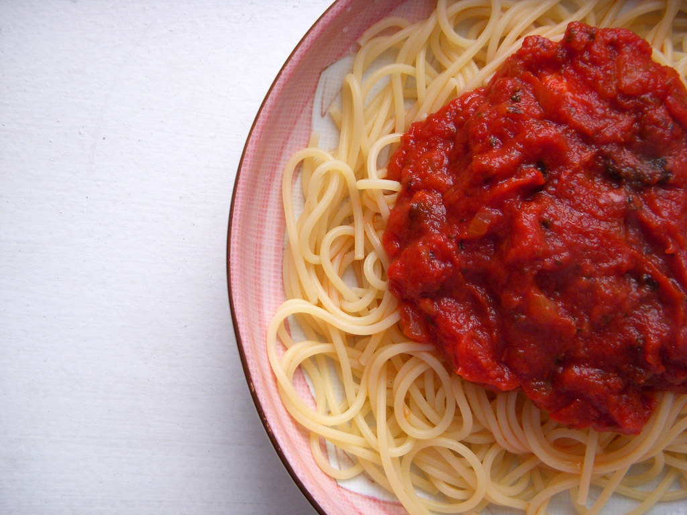

Home
Spaghetti

Homemade spaghetti with a rich and flavorful tomato sauce
This dish has to be one of my favorites, the flavor and the comfort of home cooking make it a great anytime dish.
Ingredients
- Spaghetti noodles
- Tomato sauce
- Garlic
- Onion
- Olive oil
- Salt and pepper to taste
Directions
- Boil water in a large pot and add salt.
- Add spaghetti noodles and cook according to package instructions.
- In a separate pan, heat olive oil and sauté garlic and onion until fragrant.
- Add tomato sauce and simmer for 10-15 minutes.
- Drain spaghetti and toss with the sauce.
- Season with salt and pepper to taste.
- Serve hot and enjoy!